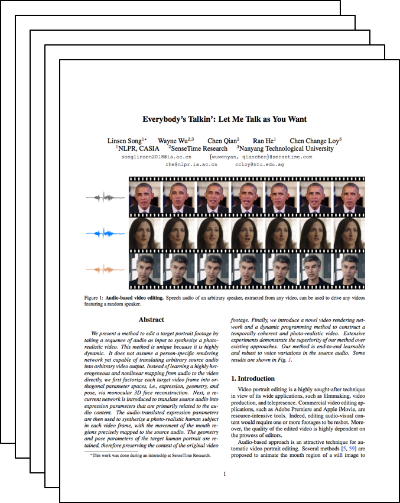

Everybody’s Talkin’: Let Me Talk as You Want
|
NLPR, CASIA
|
SenseTime Research
|
Nanyang Technological University
|
We present a method to edit a target portrait footage by taking a sequence of audio as input to synthesize a photo- realistic video. This method is unique because it is highly dynamic. It does not assume a person-specific rendering network yet capable of translating arbitrary source audio into arbitrary video output. Instead of learning a highly het- erogeneous and nonlinear mapping from audio to the video directly, we first factorize each target video frame into or- thogonal parameter spaces, i.e., expression, geometry, and pose, via monocular 3D face reconstruction. Next, a re- current network is introduced to translate source audio into expression parameters that are primarily related to the au- dio content. The audio-translated expression parameters are then used to synthesize a photo-realistic human subject in each video frame, with the movement of the mouth re- gions precisely mapped to the source audio. The geometry and pose parameters of the target human portrait are re- tained, therefore preserving the context of the original video footage. Finally, we introduce a novel video rendering net- work and a dynamic programming method to construct a temporally coherent and photo-realistic video. Extensive experiments demonstrate the superiority of our method over existing approaches. Our method is end-to-end learnable and robust to voice variations in the source audio.
Paper
|
|  |
Everybody’s Talkin’: Let Me Talk as You Want
Linsen Song, Wayne Wu, Chen Qian, Ran He, Chen Change Loy
Technical report.
|
Videos
Acknowledgements
This work is supported by SenseTime Group Limited.
|
{kind=link}